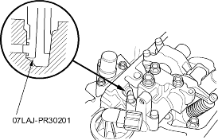
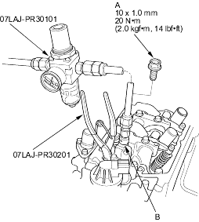

- Air Stopper, 07LAJ-PR30201
- Valve Inspection Set, 07LAJ-PR30101
- Remove the resonator (see step 5 on page 6-11).
- Remove the ignition coil cover, then remove the four ignition coils, refer to the '01 Civic Shop Manual on this CD (see page 4-24).
- Remove the throttle cable clamps and harness holder from the cylinder head cover (see step 21 on page 6-14).
- Remove the cylinder head cover (see step 22 on page 6-14).
- Set the No. 1 piston at TDC (see step 5 on page 6-8).
- Verify that the intake secondary rocker arm (A) moves independently of the intake primary rocker arm (B).
- If the intake secondary rocker arm does not move, remove the primary and secondary rocker arms as an assembly and check that the pistons in the secondary and primary rocker arms move smoothly. If any rocker arm needs replacing, replace the primary and secondary rocker arms as an assembly and retest.
- If the intake secondary rocker arm moves freely, go to step 7.

- Repeat step 6 on the remaining intake secondary rocker arms with each piston at TDC. When all the secondary rocker arms pass the test, go to step 8.
- Check that the air pressure on the shop air compressor gauge indicates over 400 kPa (4 kgf/cm2, 57 psi).
- Inspect the valve clearance (see page 6-8}.
- Cover the timing belt with a shop towel to protect the belt.
- Plug the relief hole with the air stopper.

- Remove the sealing bolt (A) from the inspection hole (B) and connect the valve inspection set.
